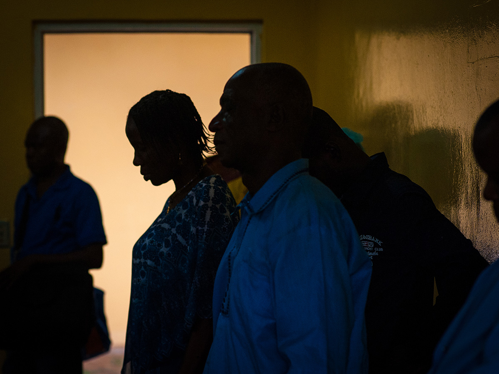

When the wheels of an airplane meet the tarmac in Africa, passengers sometimes will break out in applause to celebrate their safe arrival. When Flight 1247 from Brussels touched down at Roberts International Airport shortly after eight in the evening Liberia time Friday, Jan. 16, there was only the sound of one woman’s moan of pain.

For much of the last leg of the flight from Brussels to the capital city of Monrovia in Liberia, following a stop for fuel in Dakar, the woman had uttered not a peep. As the plane descended, however, she cried out loud, “I’m burying my baby!” as flight attendants hurried over to her middle-row seat on the plane, where she sat clutching a large doll. Her son, she told them, had died of Ebola. The woman’s cries reached a howl when she finally descended the stairs of the plane and touched her feet to the ground, her legs buckling. Falling to the ground, she was steadied by a man standing with her. The rest of the passengers filed by her, boarding a shuttle to customs. Still standing outside at the foot of the plane, the woman’s mournful sobs were silenced as the sliding doors closed shut.
The shuttle rolled a brief ways to the small building that receives visitors at the airport, its passengers spilling out and directed to large containers of water resting on tables outside the building. Buckets underneath caught the splash as people furiously scrubbed their hands with the chlorinated water. At the door, a worker held a thermometer to each person’s head, waving them on if there was no sign of fever. The lone luggage carousel hummed as people jostled for position to grab theirs. It was a chaotic scene, with security frantically trying to check each piece of luggage. Outside, taxis lined up to snag hurried customers. Personal drivers held signs to catch the attention of their passengers. Night had descended over Monrovia, a blanket of heat cloaked over the 970,000-plus people that live there — most of them in abject poverty.
When daylight broke the next day, the cries of a heartbroken mother had long faded, but much like the buckets of chlorinated water at the airport, there were signs all over Monrovia that, while the disease that has claimed the lives of more than 3,680 Liberians may be loosening its death grip on the country, it has not freed it entirely. Some here are saying the World Health Organization could declare the crisis over as soon as March.
“Someone tell me, ‘Ebola is gone,’” Rev. Dr. Samuel Reeves Jr. of Monrovia’s Providence Baptist Church said in the Liberian English practiced here. “I say, ‘No, it is not gone. It is going.’”
Until it is vanquished, Ebola remains very much a threat in West Africa. Even when it is not directly responsible for someone’s death, the devastating disease that has claimed close to 9,000 victims in Liberia, Sierra Leone and Guinea, and completely changed the way of life in these West African nations, is not free of guilt.
Brewerville City in Liberia’s Montserrado County was allegedly raped Sunday night Jan. 18, and reportedly died the next day when two hospitals in Monrovia — Redemption, a government-run facility, and Faith Clinic — refused to admit her. According to reports, personnel at Redemption saw the girl was bleeding and told relatives they were afraid of Ebola.
While the sounds are not as frequent, ambulances still speed by, lights flashing and alarms blaring, often in a rush to take a patient to one of the city’s Ebola Treatment Units (ETUs). They fight for priority over the massive push of cars and motorcycles along the paved roads in Monrovia. Traffic is, more often than not, snarled along the main roads, the congestion only worsened by so many emergency vehicles donated from other countries in the fight against Ebola. The cars, trucks and bikes also must contend with the crush of pedestrians and child hawkers, some no older than eight, moving swiftly, vehicle to vehicle, selling candy, gum and shouting “watta, watta, watta” to their rolling clientele. The water comes in small, knotted bags from buckets that were, much earlier in the day filled from local well pumps. They prove tempting during the humid days as West Africa lurches into its hot season.
American and other military personnel are also a visible presence here, a result of an outpouring of help from the international community. Since arriving, they have built mobile laboratories that have dramatically sped up the time it takes to test for Ebola, and have delivered much-needed food, medicine and other supplies to a country largely populated by families living in poverty.
There are other, more literal signs that Ebola remains a threat not to be taken lightly. One cannot drive more than several hundred yards, it seems, without spying a billboard or sign along the side of the road, or attached to a building, warning of the dangers of Ebola. A sign reading “Ebola is Real” hints of when the disease first infiltrated Liberia, and many of its citizens ignored the calls to protect themselves. Despite being told to do the exact opposite, these loving and expressive people continued to shake hands, to hug and to kiss. It is, after all, their custom. That physical contact and exchange of sweat and other bodily fluids, however, is also how Ebola does what it has done with such unrelenting fury since the first outbreak in West Africa was identified in 2013.